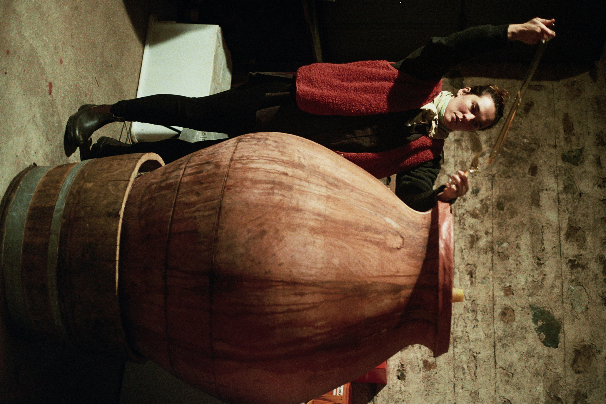
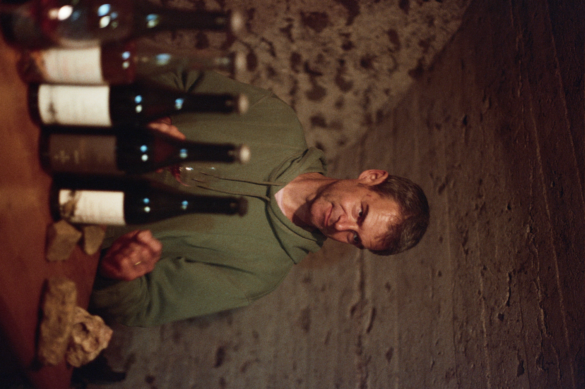
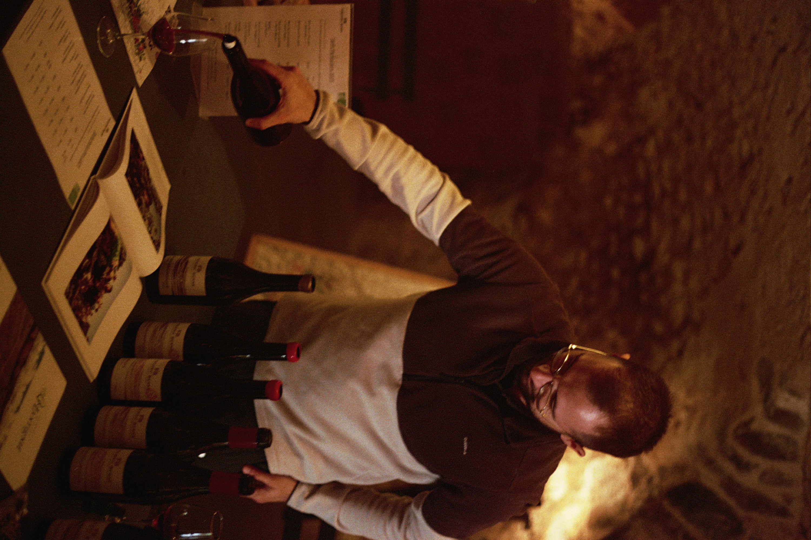
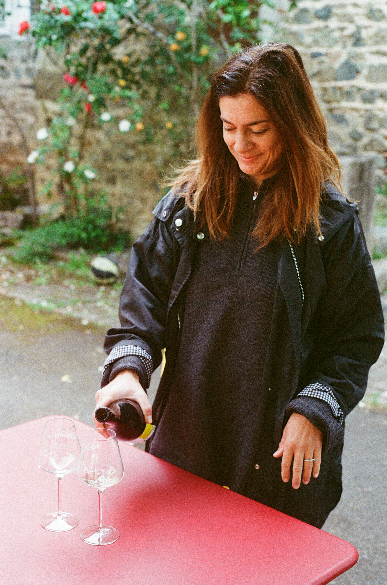
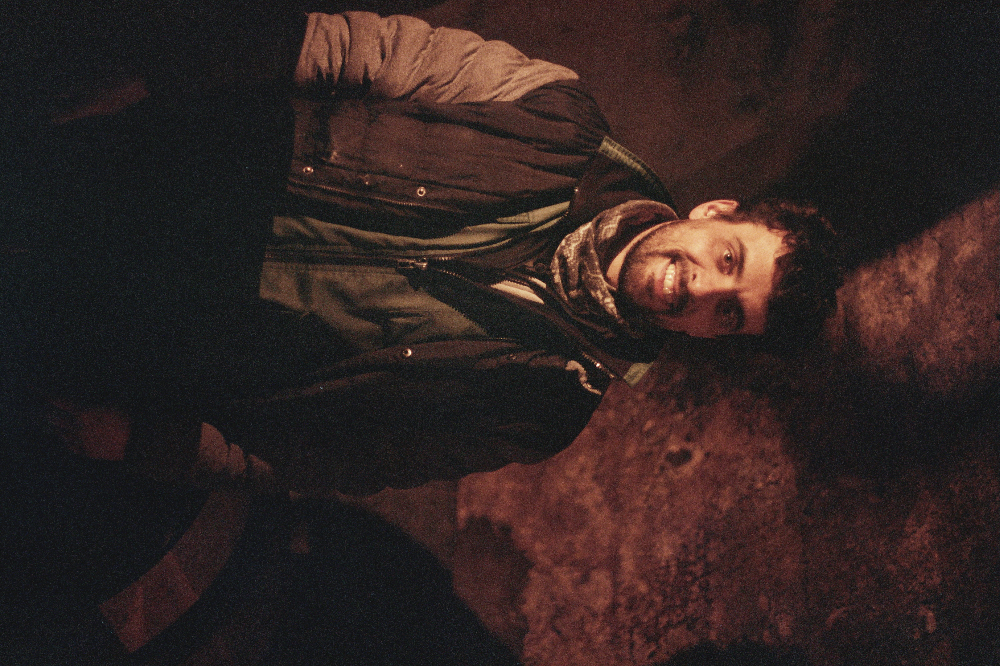
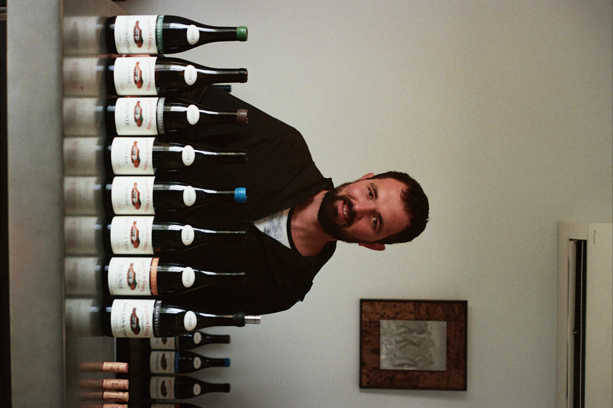

Wijnmakers
De mensen achter de wijn — klik of tik op een domein om meer te lezen.

Château des Vergers
Cosima
Château des Vergers
Lantignié, Beaujolais
Cosima belichaamt Lantignié. Binnen de associatie is zij de enige waarvan alle percelen in Lantignié liggen en die dus uitsluitend wijnen als AOP Beaujolais Lantignié maakt. Ze focust sterk op de invloed van terroir en toont hoe dit tot verschillende expressies per cuvée kan leiden.
Ze wil dit tot het uiterste doordrijven om te laten zien wat Lantignié te bieden heeft. Zo plantte ze chardonnay aan op een pierre bleue-ondergrond, een bodem die typisch is voor de blauwe gamaydruif en bekendstaat om het voortbrengen van meer gestructureerde, kruidige rode wijnen. Met haar witte wijn bewijst ze echter dat deze grond ook prachtige, frisse, kruidige en minerale witte wijnen kan opleveren. Men moet dus niet altijd de boekjes volgen, en Cosima is niet bang om van de geijkte paden af te wijken.
Haar domein bevindt zich in het oudherenhuis, Château des Vergers, waarin je je terug waant in de tijd. Dat was bij mij toch zo, toen ik voor de eerste keer het huis betrad en mijn gedachten naar vorige eeuwen dreven, naar hoe het huis al door zoveel generaties bewoond is geweest en hoeveel jaargangen wijn er wel niet moeten zijn gemaakt, want dat wordt verklapt door de koele, duistere stenen kelder onder het gebouw en de oude houten pers die nog steeds gebruikt wordt. Cosima wijkt dus af van beloopbare banen maar ze houdt ook veel rekening met de traditie die de Beaujolais met zich meedraagt, een belangrijk kenmerk dat ik in heel de associatie terugvind. Zo maakt ze ook elk jaar een bijzonder geslaagde Beaujolais Nouveau!
Cosima startte in 2019, na stages in de Roussillon en bij Frédéric Berne, met zes hectare wijngaard, die ze intussen volledig herstructureerde volgens agro-ecologische principes, een keuze die voortvloeit uit haar opleiding als ingenieur in internationale agro-ontwikkeling en haar streven naar het ontwikkelen van veerkrachtige wijnstokken.
In de kelder werkt ze met minimale interventie: inheemse gisten, lange maceraties en een opvoeding die per perceel wordt aangepast. Haar doel is duidelijk: terroirgedreven wijnen met een ziel en een eigen stempel.

Domaine les Capréoles
Cedric
Domaine les Capréoles
Lantignié, Beaujolais
Bij Cédric Lecareux langsgaan is altijd boeiend. Met een mooie degustatie en een heldere, persoonlijke visie op wijn. Hij is een sterke vertegenwoordiger van biodynamische wijnbouw in VTL, met al jarenlang ervaring en een aanstekelijke passie. Hij werkt met een wetenschappelijke precisie maar combineert daarbij een zekere gevoeligheid waarbij laat ruimte laat voor intuïtie en het onverwachtse, iets wat vanzelfsprekend is voor hem als je met de natuur samenwerkt.
Cédric groeide op in de Auvergne, op een gemengd boerenbedrijf waar zijn grootvader ook wijnstokken had. Later studeerde hij landbouwkunde en oenologie in Montpellier. In 2014 begon hij, zijn eigen domein in Régnié, op gronden die al vier eeuwen in één familie waren.
Volgens Cédric gebeurt 90% van de kwaliteit van de wijnen op de wijngaard, de andere 10% in de kelder. Hij is gecertificeerd bij Biodyvin, een organisatie die volgens hem meer ruimte laat voor experiment dan Demeter.

Domaine Frédéric Berne
Frédéric, Cédric, Antoine
Domaine Frédéric Berne
Lantignié, Beaujolais
Drie zomers geleden verzeilde ik met enige toevalligheid bij domaine Frédéric Berne. Ik was op reis in de Beaujolais en koos op mijn weg willekeurig enkele wijndomeinen uit via google maps die me aanspraken, nog geen idee dat deze spontane stop de koers van mijn leven zou veranderen. Ontvangen door Antoine Duplan, leidde hij me een oude, koele kelder binnen waar ik mijn eerste Lantignié wijnen proefde.
Voor een eerste kennismaking met Lantignié bleek ik meteen bij het juiste adres. Frédéric Berne is immers de spilfiguur van de association Vignerons et Terroirs de Lantignié. Die dag kwam ik veel te weten over hun duurzame wijnbouwmethodes, hun ambitie om Lantignié als elfde cru van de Beaujolais erkend te krijgen en over de geologische geschiedenis van de bodems.
Toch was het uiteindelijk de wijn zelf die de grootste indruk naliet. Hun cuvée Lantignié Les Bruyères gaf me rillingen en maakte iets los wat ik moeilijk kon benoemen, een wijn met diepgang en karakter, een wijn die iets te vertellen heeft. Ik had nooit gedacht dat ik tijdens die reis de fijnste en meest elegante wijnen zou vinden in een Beaujolais-Villages in plaats van in een cru.
Frédéric groeide op in een wijnmakersgezin en werd zich al op jonge leeftijd bewust van de afhankelijkheid van chemische middelen binnen de wijnbouw. Hij besloot zich te verdiepen in duurzamere methoden en ontwikkelde expertise in agro ecologie, agroforestry en biodynamie.
In 2014 richtte hij zijn eigen wijndomein op en begon met drie hectare pachtgrond bij Château des Vergers. Later breidde hij uit met een hectare in Morgon en een in Chiroubles. Inmiddels beslaat het domein vijftien hectare en werkt hij samen met zijn broer Cédric Berne en Antoine Duplan.

Domaine de Romarand
Anastasia
Domaine de Romarand
Lantignié, Beaujolais
Gelegen op een heuvel, omringd door bossen, nabij Quincié, een dorp niet ver van Lantignié, ligt Domaine de Romarand, in een groot landhuis waar zich al eeuwenlang een vinificatieruimte bevindt, met een honderd jaar oude pers die Anastasia Kritikou vandaag de dag nog gebruikt om haar wijn te maken.
Afkomstig uit de Peloponnesos kwam Anastasia aanvankelijk naar Frankrijk om er als architecte te werken, tot zij na het volgen van een wijnbouwcursus en de mogelijkheid het prachtige huis te kunnen kopen, een andere richting insloeg.
Niet meer wonend in de grootstad Lyon maar in een landschap waarin de geur van het bos tot ver reikt, waar vele vogels te horen zijn en aan de bosranden dagelijks herten opduiken, wijdt Anastasia haar tijd aan het maken van zo puur mogelijk wijn. Dieren nemen een opvallende plek in op de labels die ze zelf heeft ontwikkeld, en de Griekse letters verwijzen naar haar roots.Anastasia werkt met een respect voor de natuur en de biodiversiteit van haar wijngaarden, die ze biologisch bewerkt. Ze maakt wijnen die het terroir weerspiegelen, met een focus op expressieve, elegante en evenwichtige wijnen.
Anastasia werkt volledig biologisch en hanteert daarbij verschillende principes uit de biodynamie. In mijn gamma bevinden zich twee wijnen uit Lantignié: Mi en Alpha. Alpha rijpte gedurende een jaar in een eivormig betonnen vat; door die bijzondere vorm blijft de wijn voortdurend in beweging, waardoor de gisten niet op de bodem bezinken maar langzaam door de wijn blijven circuleren, wat bijdraagt aan zijn textuur en diepte. Mooie rijpe, kruidige wijnen afkomstig van de pierre bleue bodem!
Klik of tik om meer te lezen ▴

Les Vignes de M
Maxime Malard Mathieu
Les Vignes de M
Lantignié, Beaujolais
In februari 2025, op een ijzige, mistige winterdag, ontmoette ik Maxime Malard in zijn wijnkelder waar ik al een eerste voorproefje kon krijgen van de wijnen uit 2024 die nog aan het rijpen waren in de cuves. Een winter later kon ik met trots deze wijnen aanbieden in mijn gamma.
Maxime is een jonge wijnmaker die zijn project startte met een atypische visie op Gamay: licht, fris en bijna zonder tannine. Zijn wijnen zijn een verademing voor wie op zoek is naar speelse, gemakkelijk drinkbare cuvées. Hij werkt biologisch en met minimale interventie in de kelder, waarbij hij de expressie van het terroir centraal stelt.
Terugdenkend aan het bezoek heb ik nog steeds het beeld van Maxime die in het warme, oranjebruine kelderlicht wijn uit zijn amfora haalde. Een mooie, elegante wijn, ‘Vernus’, die naast zijn speelse cuvée ‘Spes’, deel uitmaakt van mijn selectie. Hij vertelde toen over zijn manier van werken: biodynamisch en zo duurzaam mogelijk. Zo bestonden zelfs zijn visitekaarten uit duurzaam groeipapier en sluit hij zijn flessen af met honingwas in plaats van kunstmatige was.
Maxime is dan ook helemaal in zijn element tussen zijn wijnranken, waar ik hem onlangs nog bezocht en waar hij vol enthousiasme vertelde over zijn duurzame wijnbouwmethodes. Met zijn achtergrond als bio-ingenieur en zijn eerdere werk als boomverzorger en in de snijbloementeelt, nam hij veel bagage mee voor zijn voortdurende zoektocht om ecosysteem en biodiversiteit centraal te stellen, een viticultuur waarin de natuur niet iets is dat gedomineerd of gecontroleerd moet worden, maar een levende entiteit is waarmee de wijnbouwer mee communiceert, in dialoog treedt, naar luistert, zich op afstemt en uiteindelijk samen mee beweegt.
Vanaf jaargang 2025 maakt Maxime ook een mooie witte wijn: Alba. Deels op eik en deels in inox opgevoed, een elegante frisse witte wijn!
Klik of tik om meer te lezen ▴

Domaine de la Roche
Mathieu
Domaine de la Roche
Lantignié, Beaujolais
Ik herinner me goed de momenten aan tafel bij Mathieu Collonge en diens vader Christophe Collonge, twee hartelijke wijnmakers met wie ik urenlang kon praten over wijnmaken, en waarbij, naarmate de tijd vorderde, telkens een nieuwe fles de tafel voller maakte.
Klik of tik om meer te lezen ▴

William Charriat
Irancy
William Charriat
Irancy, Bourgogne
Sample tekst — William produceert krachtige, kruidige Pinot Noir-wijnen op de kleibodems van Irancy, aangevuld met een vleugje César voor extra structuur. Zijn wijnen combineren terroir-expressie met bewaarpotentieel.
Klik of tik om meer te lezen ▴

Domaine de Colette
Cosima
Domaine de Colette
Lantignié, Beaujolais
Domaine de Colette ligt aan de flank van een heuvel waarop een wijngaard is aangeplant die bovenaan door een smalle strook bos wordt begrensd, en iets verderop, voorbij een lichte glooiing in het landschap, een paardenweide waar Ikoroi, het paard waarmee Pierre Alexandre zijn wijngaarden ploegt, doorgaans vredig staat te grazen.
Domaine de Colette is een gevestigde naam in de Lantignié, een familiedomein dat inmiddels al drie generaties meegaat en heeft daardoor ook een breed en gevarieerd gamma aan Crus uit de Beaujolais. In 2019 voegde de zoon Pierre-Alexandre Gauthier zich bij het familiedomein. Na een opleiding in wijnbouw en oenologie, een licentie in wijnhandel en ervaring in de wijnbouw in Nieuw-Zeeland, bracht hij een frisse wind mee. In 2020, op 24-jarige leeftijd, zette hij het domein op het spoor van de biologische wijnbouw. Een logische stap volgens hem want zijn vader had altijd al bewust een minimale inzet van chemische middelen gebruikt en het gras tussen de rijen behouden.
Klik of tik om meer te lezen ▴